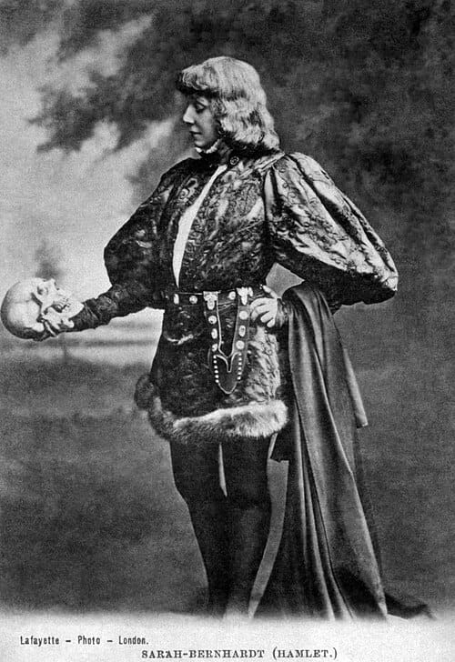
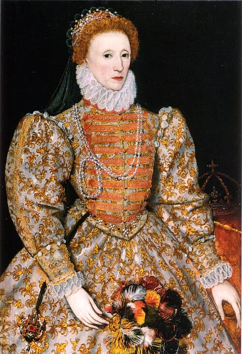
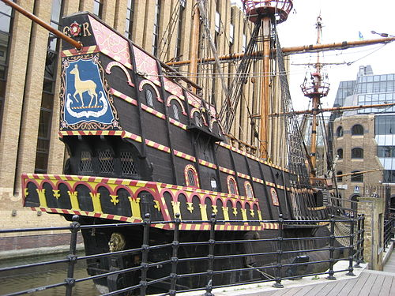
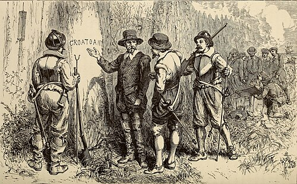

Key Topic 3: Elizabethan society in the Age of Exploration, 1558-88
Course Enquiry: From religious division to the Armada: How did Elizabeth secure her throne?
Contents
|
Lesson 1: KT3.1: Education and leisure
|
---
|
|
Lesson 2: KT3.2: The Problem of Poverty
|
---
|
|
Lesson 3: KT3.3: Exploration and voyages of discovery
|
---
|
|
Lesson 4: KT3.4: Raleigh and Virginia
|
---
|
L1: KT3.1: Education and leisure[[SRC_MARKER:L8_Start]]
Learning Objectives
Understand the purpose of Elizabethan education and the influence of Humanist thinking and the printing press.
Analyse how the schooling system (Petty schools, Grammar schools, and Universities) was strictly divided by class and gender.
Explain the differences in leisure and sports between the nobility and the lower classes, including the universal popularity of 'cruel sports'.
Evaluate the reasons for the sudden explosion of the Elizabethan theatre and why it provoked such fierce opposition from Puritans and city authorities.
Vocabulary Check
Write a short paragraph using at least FOUR of the vocabulary words below correctly.
Grammar School | Pastimes
[[SRC_MARKER:L8_Source_0]]
Source A: Elizabethan Theatre

A sketch of the Swan Theatre in London, showing the stage and audience galleries.
In Elizabethan England, education was not about equality or social mobility; it was strictly about preparing people for their expected roles in life. The system was completely dominated by the social hierarchy. However, the period did see a slight expansion in education. This was largely driven by Humanism, championed by scholars like Roger Ascham (Elizabeth's own tutor), which acted as a definitive catalyst for educational reform. Humanists believed that society could be improved through learning and that the wealthy had a duty to be highly educated to effectively serve the state. Furthermore, the growth of Protestantism encouraged people to learn to read the Bible in English, a trend rapidly accelerated by the invention of the printing press, which made books significantly cheaper.
Despite these changes, education remained a strict privilege.
* Petty Schools: Children from the lower-middle classes (like prosperous farmers or craftsmen) might attend local Petty schools from the age of six, using a hornbook to learn basic literacy and maths. Girls rarely progressed beyond this stage; their education was heavily restricted to domestic skills (spinning, brewing, needlework) to prepare them for marriage.
* Grammar Schools: For the sons of the gentry, merchants, and wealthy professionals, Grammar schools provided a rigorous education from age seven to fourteen. The curriculum was dominated by Latin, Greek, and classical philosophy. Discipline was incredibly harsh, with teachers frequently using the cane.
* University: England had only two universities: Oxford and Cambridge. These were reserved for the sons of the nobility and the brightest scholars, focusing on geometry, music, philosophy, and law.
Ultimately, literacy rates rose during Elizabeth's reign (by 1603, roughly 30% of men could read), but the stark inequality remained: only around 10% of women achieved literacy, and the vast majority of the labouring poor remained entirely uneducated, as their children were needed to work the land.
Leisure in Elizabethan England was intrinsically linked to a person's social class. The nobility possessed vast amounts of free time and wealth. Their sports were highly exclusive, including hunting on horseback, hawking (using trained birds of prey), fencing, and 'real tennis' (a complex, indoor version of the modern game).
Conversely, the lower classes engaged in brutal, chaotic pastimes. The most famous was mob football, a violently aggressive game played between neighbouring villages with almost no rules, which frequently resulted in severe injuries or even death.
However, one area of leisure united all classes: Cruel Sports. Bear-baiting and bull-baiting (where a chained bear or bull was attacked by a pack of specially bred fighting dogs) were massively popular. Purpose-built arenas, like the Bear Garden in London, drew massive crowds, and even Queen Elizabeth herself was an enthusiastic fan, frequently commanding private exhibitions at court.
The most revolutionary cultural shift of the era was the explosion of the theatre. Before Elizabeth's reign, wandering 'strolling players' primarily performed religious mystery plays. Elizabeth banned these plays in the 1570s to prevent Catholic and Protestant conflict. This ban acted as a powerful catalyst for playwrights—such as Christopher Marlowe and William Shakespeare—to write exciting, secular (non-religious) plays, such as comedies and violent tragedies.
In 1576, the first purpose-built theatre, The Theatre, opened in London, soon followed by The Rose and The Globe. The theatre was entirely unique because it mixed all social classes. For just one penny, the poorest citizens (the 'groundlings') could stand in the open-air pit, while the nobility paid to sit in the covered, cushioned galleries above.
However, the theatre provoked intense fury from the Puritans, who argued that it was a den of sin that distracted people from prayer. This anger was exacerbated by the location of the theatres; they were built in the 'suburbs' outside the strict control of the City of London's Mayor, meaning they attracted thieves and prostitutes, and contributed heavily to the rapid spread of the bubonic plague. Furthermore, the 1572 Vagabonds Act meant that actors were treated as criminals unless they had a license from a lord. Consequently, the theatre only survived because it was heavily protected by the Queen and powerful nobles who actively sponsored the acting companies, such as the Earl of Leicester's Men and the Lord Chamberlain's Men.
Elizabethan education and leisure were highly effective mirrors of the era's rigid social hierarchy. Education expanded thanks to Humanism, the printing press, and Protestantism, but it remained fundamentally unequal, strictly ring-fencing opportunities based on gender and wealth. Similarly, sports like real tennis and mob football visually separated the elite from the masses. However, the late 16th century also saw the birth of a unified popular culture. Cruel sports and the booming new theatres provided shared spaces where, for a few hours, the glittering nobility and the illiterate groundlings experienced the exact same entertainment, creating a vibrant, albeit highly controversial, cultural golden age.
L2: KT3.2: The Problem of Poverty[[SRC_MARKER:L9_Start]]
Learning Objectives
Understand the economic and demographic causes of the poverty crisis, focusing on population growth, inflation, and the devastating impact of enclosure.
Analyse contemporary Tudor attitudes towards the poor, specifically the strict division between the 'deserving' (impotent) and 'undeserving' (able-bodied) poor.
Explain the reasons behind the public terror of vagabonds.
Evaluate the significance of Elizabeth's changing policies, specifically the 1572 Vagabonds Act and the 1576 Poor Relief Act.
Vocabulary Check
Write a historically accurate sentence connecting two terms from the glossary box below.
Vagabond / Vagrant | Enclosure | Impotent Poor | Able-Bodied Poor | Poor Rate
Your Sentence:
[[SRC_MARKER:L9_Source_0]]
Source A: The Poor Law

An extract from the 1601 Elizabethan Poor Law outlining support for the destitute.
During Elizabeth's reign, the number of people living in extreme poverty rapidly increased. This crisis was driven by a 'perfect storm' of economic and demographic factors. The foundational cause was population growth; the population of England rose dramatically from roughly 3 million in 1551 to over 4 million by 1601. This population boom acted as a direct catalyst for rampant inflation. Because there were more people, the demand for food and housing skyrocketed, causing prices to rise much faster than wages. Consequently, ordinary labourers found it increasingly impossible to afford basic survival necessities, a situation severely exacerbated by a series of disastrously bad harvests in the 1570s that caused acute food shortages.
Furthermore, poverty was intrinsically linked to the agricultural shift known as enclosure. To make more money, wealthy landowners fenced off shared village land to breed sheep for the lucrative European wool trade. Sheep farming required only one shepherd, whereas traditional crop farming required dozens of labourers. This led to mass evictions, forcing thousands of unemployed, desperate farmers to leave their villages and migrate to towns and cities looking for work, rapidly swelling the ranks of the urban poor. Finally, when the English cloth trade collapsed due to a trade embargo with Antwerp, thousands of weavers and spinners lost their jobs overnight.
The Elizabethan government did not believe it was their job to help the poor; they believed everyone had a fixed, God-given place in the social hierarchy. They strictly divided the poor into two categories. The 'Impotent Poor' (the sick, elderly, and orphans) were viewed with sympathy as the 'deserving poor' and were helped by local charity and the Church.
However, the 'Able-Bodied Poor' were viewed with intense suspicion and hatred. The authorities believed that if you were physically capable of working but had no job, you were simply lazy and dangerous. The most hated of all were vagabonds—homeless beggars who wandered the country. The public was terrified of them. Popular pamphlets, like those written by Thomas Harman, warned the public about deceptive tricksters, such as the 'Counterfeit Crank' (who faked epileptic fits with soap in their mouth to get sympathy money) or the 'Clapper Dudgeon' (who tied arsenic to their skin to create fake, bleeding sores).
Initially, the government's approach to vagabonds was purely brutal. However, as the crisis deepened, the government realised that the threat of mass starvation could lead to a catastrophic peasant rebellion. They had to take national action.
* The 1572 Vagabonds Act: This law was heavily punitive. It stated that any vagabond caught wandering could be brutally whipped and have a hole burned through their right ear. If caught a third time, they could be executed. However, it was historically highly significant because it officially introduced the national Poor Rate—a compulsory local tax to raise money for the deserving poor. It acknowledged for the first time that the government, not just the Church, had a duty to help the vulnerable.
The 1576 Poor Relief Act: This act was a revolutionary turning point. It finally recognised a harsh economic reality: some able-bodied people genuinely wanted* to work but simply could not find any. It ordered JPs to provide raw materials (like wool and hemp) for the unemployed to work with and sell. For those who still stubbornly refused to work, it ordered the creation of 'Houses of Correction' (strict workhouses) where they would be punished and forced to labour.
The Elizabethan era completely transformed how England dealt with poverty. The demographic explosion and the greed of enclosure destroyed the traditional, rural way of life, forcing thousands onto the road as vagabonds. Fear of these 'masterless men' initially led to brutal, violent legislation. However, the sheer scale of the crisis forced Elizabeth’s government to undergo a profound ideological shift. By introducing a compulsory Poor Rate in 1572 and actively providing raw materials for the unemployed in 1576, Elizabeth’s government laid the very first, tentative foundations of a national welfare state—not out of modern compassion, but out of a desperate, pragmatic need to maintain social order and prevent rebellion.
L3: KT3.3: Exploration and voyages of discovery[[SRC_MARKER:L10_Start]]
Learning Objectives
Understand the factors that prompted Elizabethan exploration, focusing on new technology, expanding trade, and privateering.
Explain the reasons for, and the immense geopolitical significance of, Francis Drake's circumnavigation of the globe.
Analyse the reasons behind Walter Raleigh's attempts to colonise Virginia.
Evaluate the intersecting reasons for the catastrophic failure of the Virginia colonies, weighing poor planning against Native American resistance and the Spanish war.
Vocabulary Check
Write a clear definition and a historically accurate sentence for the term: Circumnavigation
[[SRC_MARKER:L10_Source_0]]
Source A: The Golden Hind

A replica of the Golden Hind, the ship Francis Drake used to circumnavigate the globe.
Before Elizabeth's reign, England was a relatively minor power focused entirely on Europe. However, by the 1570s, a surge of exploration transformed England's global reach. This was driven by a combination of factors:
1. Expanding Trade: Historically, England relied entirely on exporting wool to Antwerp. When relations with Spain deteriorated and the Antwerp market collapsed, English merchants desperately needed to find new, global markets. This acted as a direct catalyst for the creation of overseas trading companies, such as the Muscovy Company (trading with Russia) and the Eastland Company.
2. New Technology: Exploration was made possible by major advancements in navigation. The astrolabe and the quadrant allowed sailors to calculate their exact position at sea. Furthermore, mapmaking vastly improved, with the Mercator projection allowing for highly accurate sea charts.
3. Ship Design: English shipbuilders developed the galleon. These ships were faster, lower in the water, and featured highly manoeuvrable triangular (lateen) sails, allowing them to sail effectively across treacherous oceans.
4. Privateering: The desire for vast, rapid wealth drove sailors to the New World. English privateers aimed to raid the highly lucrative Spanish treasure fleets returning from Central and South America.
In 1577, Sir Francis Drake set sail on a secret mission funded by Elizabeth. His primary goal was to raid Spanish colonies on the Pacific coast of South America, an area the Spanish thought was entirely safe. Forced to keep sailing west to avoid Spanish capture, Drake inadvertently completed a three-year circumnavigation of the globe.
His journey was highly significant. First, he claimed land in North America (modern-day California), naming it Nova Albion for the Queen. Second, he captured a staggering £400,000 of Spanish silver (mostly from the treasure ship Cacafuego). When Drake returned, Elizabeth publicly knighted him on the deck of his ship, the Golden Hind. This massive insult was intrinsically linked to the outbreak of the Anglo-Spanish war, as it proved Elizabeth openly supported piracy.
Elizabeth wanted to establish a permanent English colony in North America to rival Spain's empire, provide a base for privateering, and secure raw materials. In 1584, she gave Sir Walter Raleigh a royal charter to colonise an area he named Virginia (in honour of the 'Virgin Queen'). Raleigh did not go himself, but he organised and funded two major expeditions (1585 and 1587) to Roanoke Island.
Both attempts ended in absolute disaster due to a combination of factors:
Poor Planning and Lack of Food: During the 1585 expedition, the English flagship, The Tiger*, hit a sandbank and let in seawater. This completely ruined their crucial food supplies and the seeds they had brought to plant crops. This immediately forced the English to rely on Native Americans for food, which bred resentment.
* Poor Leadership: The colony's leaders—specifically Richard Grenville and Ralph Lane—argued constantly. Lane was deeply aggressive and militaristic, prioritizing the hunt for gold over establishing a sustainable farming settlement.
* Native American Resistance: Driven by English aggression, demands for food, and the devastating spread of European diseases, the local Algonquian tribes fought back. Chief Wingina turned entirely against the English, launching attacks that made the colony untenable.
* The Spanish Armada: The second colonisation attempt in 1587 (which included women and children) was doomed by geopolitical events. Because of the Spanish Armada in 1588, Elizabeth banned all ships from leaving England. This meant that the colony's leader, John White, could not return with vital rescue supplies for three years. When he finally returned in 1590, the entire colony had vanished without a trace, remembered today as the 'Lost Colony'.
The Elizabethan era was the turbulent dawn of the British Empire. Forced outward by the collapse of European trade, English sailors utilised cutting-edge technology and galleon designs to project English power across the globe. While Drake’s circumnavigation was a dazzling financial and propaganda triumph that enraged Spain, Raleigh’s Virginia campaigns offered a brutal reality check. The failures at Roanoke proved that creating an empire required more than just the piracy of privateers; it required careful logistical planning, farming expertise, and sustainable diplomacy. These harsh lessons, however, laid the essential foundations for the successful Jamestown colony established shortly after Elizabeth's death in 1607.
L4: KT3.4: Raleigh and Virginia[[SRC_MARKER:L11_Start]]
Learning Objectives
Understand the significance of Sir Walter Raleigh in planning, promoting, and financing the Virginia colonies.
Analyse the economic, political, and strategic reasons for the attempted colonisation of North America.
Evaluate the intersecting reasons for the catastrophic failure of the 1585 and 1587 expeditions, weighing poor planning against Native American resistance and the Spanish Armada.
Vocabulary Check
Fill in the blanks using the vocabulary words below.
Royal Charter | Virginia | Roanoke | Algonquian
In 1584, Elizabeth I granted Walter Raleigh a __________________ giving him exclusive rights to explore and colonize any lands not held by a Christian prince. Raleigh organized an ambitious expedition to establish a permanent colony in North America, naming the vast territory __________________ in honor of the 'Virgin Queen'. The settlers landed on __________________ Island, but the colony was doomed by poor planning and increasingly hostile relations with the local __________________ Native American tribes, leading to the mysterious disappearance of the colonists.
[[SRC_MARKER:L11_Source_0]]
Source A: Roanoke Colony

A map of the failed Roanoke colony in Virginia.
Sir Walter Raleigh was one of Elizabeth’s most favoured courtiers. In 1584, Elizabeth granted him a Royal Charter to explore and colonise North America. Crucially, Elizabeth refused to let Raleigh lead the expeditions himself; he was too valuable to her at court. Instead, Raleigh’s significance lies in his brilliant planning. He raised the massive funds required by persuading merchants to invest, designed the strategy, and brought two Native Americans, Manteo and Wanchese, back to England in 1584 to help the English learn the Algonquian language.
The colonisation attempt was driven by multiple motives. Economically, England desperately needed a new market for its cloth exports following the collapse of the Antwerp market. Furthermore, establishing a foothold in the Americas was intrinsically linked to breaking Spain's lucrative commercial monopoly in the New World. Strategically, a colony in North America would provide a vital, hidden base for English privateers to launch raids against the Spanish treasure fleets.
In 1585, Raleigh sent 107 men to Roanoke, led by the naval commander Richard Grenville and the military governor Ralph Lane. It included the brilliant mathematician Thomas Harriot, who mapped the area.
However, the expedition was doomed from the start. As they arrived, their flagship, The Tiger, hit a sandbank and let in seawater. This ruined almost all their food supplies and the seeds they had brought to plant crops. The demographics of the settlers exacerbated this disaster: they were mostly soldiers and wealthy gentlemen who lacked the practical farming skills needed to survive.
Desperate, the English relied heavily on the local Algonquian tribes for food, depleting the locals' fish weirs and crucial winter stores. Governor Ralph Lane was highly aggressive, treating the Native Americans with suspicion and violence. Furthermore, the English unwittingly brought European diseases to which the locals had no immunity, wiping out whole villages. This acted as a catalyst for war. The local leader, Chief Wingina, planned to attack the English, but Lane ambushed and killed Wingina first. By 1586, the colony was starving, terrified, and entirely untenable. When Francis Drake sailed past after raiding the Caribbean, the surviving colonists abandoned Roanoke and hitched a ride home with him.
Raleigh learned from his mistakes. In 1587, he sent a second expedition led by John White. This time, the 117 settlers were mostly families—men, women, and children with practical farming skills—intended to create a peaceful, sustainable community.
Tragically, they arrived at the exact same location (Roanoke) where Lane’s men had previously slaughtered Wingina. Unsurprisingly, the Native Americans were deeply hostile from the moment they landed. After a colonist was found murdered, John White was forced to sail back to England to beg Raleigh for immediate military and food supplies.
White's ability to return was destroyed by the unfolding geopolitical crisis in Europe. In 1588, Elizabeth banned all ships from leaving English ports because every vessel was needed to fight the imminent threat of the Spanish Armada. White was stranded in England for three years. When he finally returned to Roanoke in 1590, the settlement was completely deserted. There were no bodies, just the word "CROATOAN" carved into a wooden post. The fate of the colonists remains a mystery to this day.
Raleigh’s ambitious dream of a New World empire ended in complete failure. The colonies collapsed due to a lethal intersection of terrible luck (the grounding of The Tiger), poor leadership (Lane's aggression), a lack of farming expertise, and the overarching shadow of the Anglo-Spanish war. However, Raleigh’s failure was highly significant because it provided the ultimate blueprint for future success. It proved that private funding was not enough and that successful colonisation required massive, state-backed investment and a focus on sustainable farming rather than aggressive military conquest. These harsh lessons laid the foundation for the successful establishment of Jamestown shortly after Elizabeth's death.
Generated: 2026-08-13 13:42:49 UTC | Unit: eee